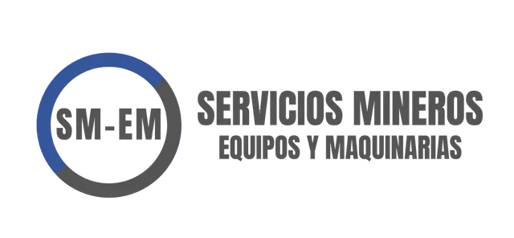

Documento de flujo operativo — Versión demo
La plataforma SM-EM es un sistema web de gestión para talleres de maquinaria pesada. Centraliza el seguimiento de equipos, clientes, órdenes de trabajo (OT), actas de recepción/entrega, control de calidad y asignación de tareas a mecánicos.
La versión actual es una demostración funcional: todos los módulos están operativos con datos de ejemplo en memoria. Permite validar flujos, pantallas y reglas de negocio antes de conectar una base de datos y servicios reales.
| Módulo | Función principal | Usuarios típicos |
|---|---|---|
| Dashboard | KPIs del taller: equipos ingresados, reparaciones activas, espera de repuestos y clientes | Admin, Supervisor, Recepción |
| Equipos | Registro de maquinaria: marca, modelo, año, serie, motor, propietario y estado | Admin, Supervisor, Recepción |
| Clientes | Ficha completa de empresas clientes y contactos | Admin, Supervisor, Recepción |
| Recepción y Entrega | Actas con checklist de 95 ítems calificados B/R/M/N/A | Admin, Supervisor, Recepción |
| Órdenes de Trabajo | Creación y seguimiento de OT por etapas del proceso productivo | Admin, Supervisor |
| Mis Tareas | Vista del mecánico: tareas asignadas, iniciar, completar u observar | Técnico, Supervisor |
| Control de Calidad | Actas de revisión con checklist R/P (95 ítems en 7 secciones) | Admin, Supervisor |
| Colaboradores | Personal del taller: mecánicos, supervisores, recepción | Admin, Supervisor |
| Usuarios | Cuentas de acceso vinculadas a colaboradores, con roles y permisos | Admin |
| Configuración | Matriz de permisos por rol y resumen de accesos | Admin |
El recorrido típico de un equipo en el taller sigue esta secuencia:
El área de Recepción crea un acta de recepción seleccionando el equipo y el cliente. Completa un checklist estandarizado de 95 ítems organizados en 7 secciones, calificando cada punto:
Cada ítem puede incluir observaciones. El acta queda registrada y consultable en cualquier momento.
Simultáneamente (o previamente), el equipo se registra en el módulo Equipos con marca, modelo, año, número de serie, número de motor y propietario (cliente). Los estados posibles del equipo son:
El Supervisor o Administrador crea una OT vinculada al equipo. Cada OT tiene número correlativo, descripción del trabajo, estado (activa, pausada, terminada) y una etapa actual del proceso productivo.
Las 10 etapas definidas (basadas en el formato OT de SM-EM) son:
El módulo de OT incluye un gráfico de distribución de OT activas por etapa.
Desde el detalle de una OT, el supervisor selecciona la etapa, el mecánico (colaborador con usuario activo) e ingresa instrucciones. Al confirmar:
En Mis Tareas, el mecánico puede:
| Acción | Estado resultante | Efecto |
|---|---|---|
| Iniciar | En Proceso | Indica que comenzó el trabajo |
| Marcar OK — Completada | Completada | Notifica al supervisor por correo simulado |
| Dejar Observación | Con Observaciones | Registra comentario y notifica al supervisor |
| Retomar Trabajo | En Proceso | Disponible tras una observación previa |
Antes de la entrega, se genera un acta de Control de Calidad con checklist de 95 ítems en 7 secciones. Cada ítem se califica como:
Se crea un acta de Entrega de equipo en Recepción y Entrega, usando el mismo checklist de 95 ítems. El equipo pasa a estado Finalizado.
Cada usuario tiene un rol que determina qué módulos puede ver. El administrador puede personalizar permisos por usuario.
| Rol | Módulos con acceso |
|---|---|
| Administrador | Todos los módulos, incluyendo Usuarios y Configuración |
| Supervisor | Dashboard, Equipos, OT, Mis Tareas, Recepción, Calidad, Clientes, Colaboradores |
| Técnico | Solo Mis Tareas — ve únicamente sus asignaciones |
| Recepción | Dashboard, Equipos, Clientes, Recepción y Entrega |
Reglas adicionales:
| Usuario | Rol | Uso en demo |
|---|---|---|
| Admin SM-EM | Administrador | Acceso total, gestión de permisos |
| Roberto Fuentes | Supervisor | Crear OT, asignar tareas, ver dashboard |
| Andrea Vega | Técnico | Ver y completar tareas asignadas |
| Patricia Muñoz | Recepción | Actas de recepción/entrega, equipos |
| Luis Herrera | Técnico | Segundo mecánico para pruebas de asignación |
El cambio de usuario se realiza desde el selector en la parte inferior del menú lateral.
La pantalla principal muestra cuatro KPIs en tiempo real (con datos de la sesión):
Debajo se listan los equipos activos con marca, serie, propietario, estado y descripción del trabajo.
La demo simula correos electrónicos en tres momentos:
| Evento | Destinatario | Contenido |
|---|---|---|
| Nueva asignación | Mecánico | OT, etapa, instrucciones del supervisor |
| Tarea completada | Supervisor | Confirmación de trabajo finalizado |
| Observación registrada | Supervisor | Comentario del mecánico sobre la tarea |
Las notificaciones aparecen como toast en pantalla. En producción se conectarían a un servicio de correo real.
| Componente | Detalle |
|---|---|
| Frontend / Backend | Next.js 15 + React 19 + TypeScript |
| Estilos | Tailwind CSS — identidad visual SM-EM (azul #3b5998) |
| Datos | Mock en memoria (demo) — no persiste entre sesiones |
| Despliegue | Compatible con Render, GitHub y entornos Node.js 20+ |
| Incluido en demo | Pendiente para producción |
|---|---|
| Todos los módulos funcionales con UI completa | Base de datos persistente (PostgreSQL u otra) |
| Checklists de recepción y calidad (95 ítems) | Autenticación real (login con contraseña) |
| Flujo OT → asignación → tareas → notificaciones | Envío real de correos (SMTP / servicio) |
| Sistema de roles y permisos | Generación de PDF de actas y OT |
| CRUD de clientes, equipos, colaboradores, usuarios | Integración con ERP / facturación |
| Gráficos de OT por etapa | Historial y auditoría de cambios |